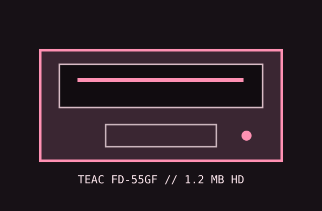

[ IDENTIFIED PC FLOPPY DRIVE ]
TEAC FD-55GF 1.2 MB 5.25-inch PC floppy drive
The FD-55GF is the double-speed, double-sided high-density PC member of the TEAC FD-55 family. Do not substitute the single-speed FD-55G characteristics or the related GFR configuration.

Documented specifications
| Density / capacity | Double-sided, 80 tracks/side at 96 TPI; PC 1.2 MB high-density and 360 KB double-density formats. |
|---|---|
| Interface | 34-pin PC-compatible signal edge connector and separate 4-pin +5 V/+12 V power connector. |
| Data rate / speed | 500 kbit/s at 360 rpm HD; 250 kbit/s at 300 rpm DD. Select the speed/density mode that matches the controller and media. |
| Jumpers / drive select | Drive-select DS0–DS3 and density/speed/interface options are set at the board configuration block. Use the model's marked PC configuration; leave termination fitted only at the end of the cable. |
| Dimensions / power | Approx. 146 × 41 × 203 mm half-height; +5 V and +12 V through a 4-pin connector. The TEAC family specification lists +5 V 0.38 A typical/0.6 A max and +12 V 0.25 A typical/0.9 A max for this drive class; verify the full suffix/revision. |
| PC controller compatibility | Designed for PC/AT-class 765-family controllers supporting 1.2 MB 5.25-inch HD; can use 360 KB mode when BIOS/controller, speed, media, and alignment are correctly configured. |
Preservation notes
Photograph the suffix, board revision, DS setting, density/speed jumpers, and terminator before testing. Preserve the original jumper arrangement; confirm spindle speed with the specified procedure before attempting writes to collection media.
Manuals & archive sources
- TEAC FD-55 series specificationsManufacturer specifications for FD-55 family model differences and electrical/mechanical limits.
- TEAC FD-55 maintenance manual (1985)Primary service documentation and jumper/configuration reference.
- TEAC FD-55 model comparison — retrocmp archiveModel table distinguishes FD-55GF from the G, GFR, and other family members.